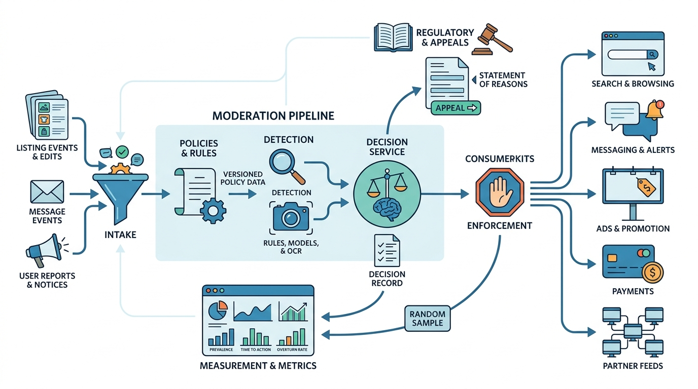

Part V — TRUST: Keeping the Marketplace Safe
Trust and Safety as a Platform

Image generated by Google Gemini (gemini-3-pro-image-preview)
Part V — TRUST: Keeping the Marketplace Safe

Image generated by Google Gemini (gemini-3-pro-image-preview)